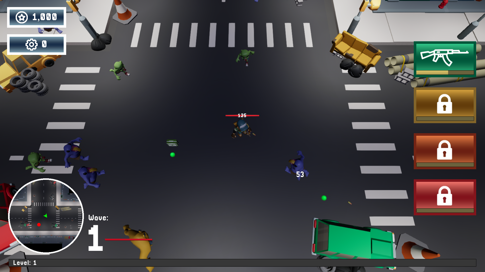
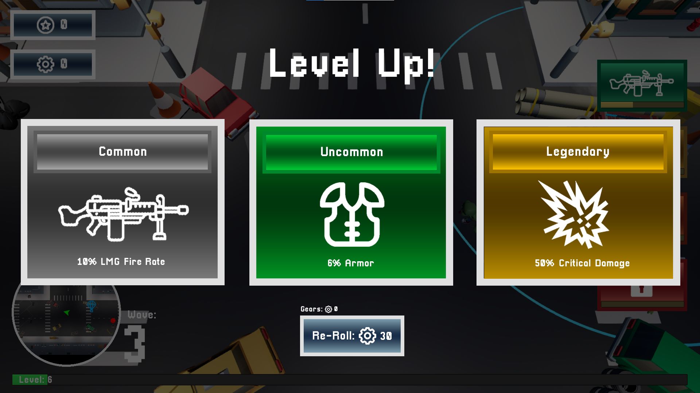
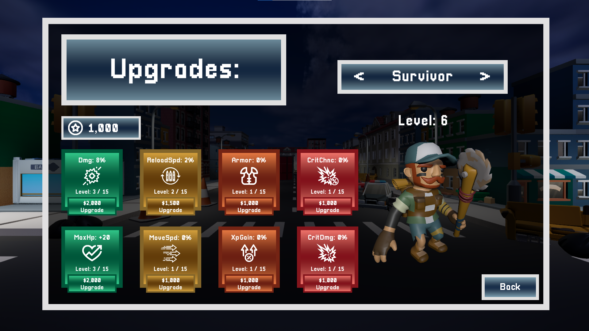
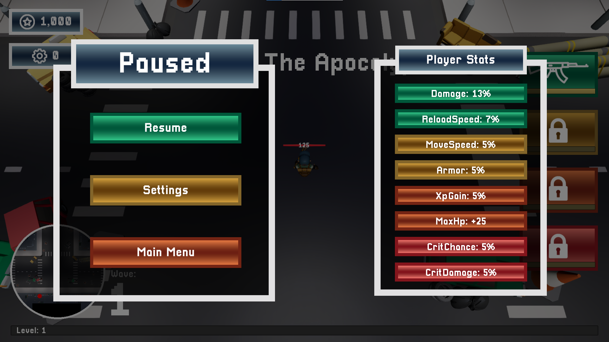
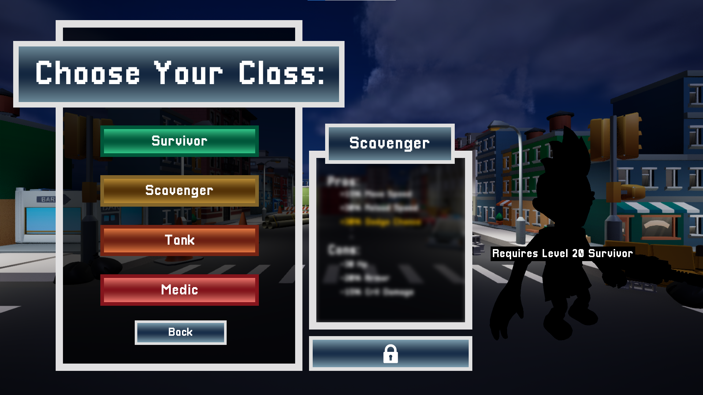

Game Demo:
As part of my final year capstone project last year, I developed a top-down zombie survival shooter in Unreal Engine, focusing on delivering an engaging player experience through refined mechanics, diverse gameplay features, and performance optimization. The game challenges players to survive waves of enemies using an array of upgradable weapons, strategic resource management, and dynamic combat. Throughout the development process, I worked on expanding weapon variety, balancing enemy behavior, and optimizing core systems to create a smoother and more immersive experience.
In the early stages of development, I focused heavily on building the weapon system. I started with a simple gun system and gradually expanded it to include a range of unique weapons, such as sniper rifles, flamethrowers, and grenade launchers, each with distinct mechanics. For example, the sniper rifle was designed to prioritise the strongest enemy, while the flamethrower dealt damage over time. Implementing these weapons helped me get better at reusing code and tweaking it for new behaviors. As development progressed, I introduced additional mechanics like critical hits, damage types, and upgradeable weapon stats, adding more depth and strategy to the combat system.
A significant amount of time went into balancing the gameplay and ensuring everything felt smooth. I implemented stat multipliers for weapon damage and reload speed, allowing players to upgrade these stats over time. This required extensive testing and tweaking to maintain balance. To assist with this, I added damage indicators to track and verify weapon damage in real time. Additionally, I optimised performance by improving collision detection, refining spawn logic, and streamlining event ticks to handle more on-screen action without lag.
Enemy AI and spawning logic were also key areas of focus. Initially, the system recognized only specific enemy types, so I used an interface to manage different variations. However, after implementing inheritance, I streamlined this by handling enemy types through a parent class, making the system more efficient. I also reworked spawning logic to fix issues with enemies appearing off-screen, which sometimes led to glitches. Instead, I adjusted the system so enemies would spawn underneath cars in the environment, ensuring a controlled and consistent spawning process. To maintain a fair but challenging experience, I fine-tuned spawn rates and enemy stats to scale dynamically as the player leveled up.

Beyond core mechanics, I spent considerable time polishing the game and adding finishing touches. I developed new UI elements, such as a weapon upgrade screen and a minimap to help players locate supply drops and boss enemies. Visually, I enhanced the apocalyptic city setting by introducing character models, animations, and environmental refinements. To further encourage exploration and progression, I added features like supply drops and a currency system.
Looking back, this project has been an invaluable learning experience. I've made significant progress in both C++ and Unreal Engine, and the improvements are evident in how much more polished and feature-rich the game has become. It’s not just about acquiring new skills, it’s about applying them effectively to create a more engaging player experience. The journey has been challenging, but seeing the game evolve into something dynamic and enjoyable has been incredibly rewarding.
